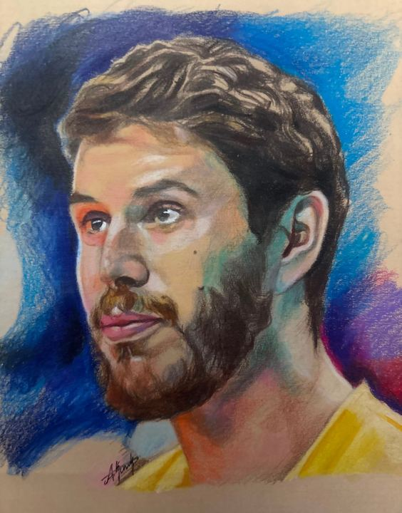
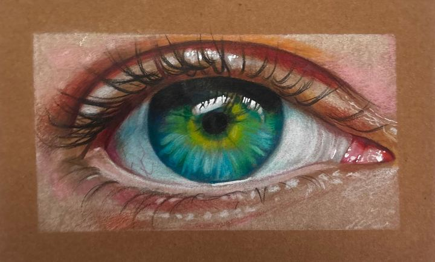
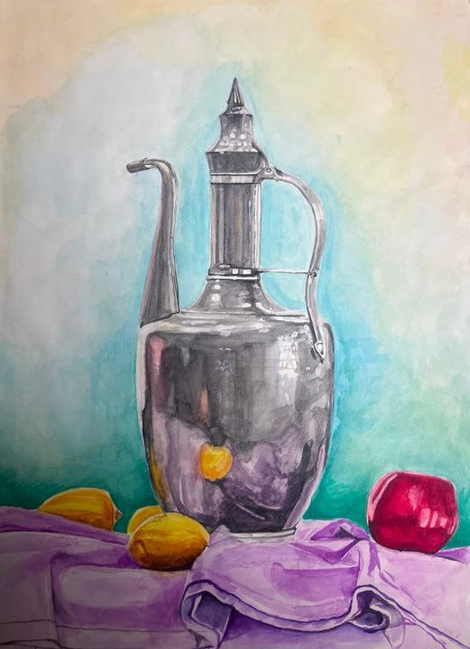

✺ portfolyo — 2026 ✺
çizgiyle hikâye anlatan adam.
Merhaba, ben Adem Kınık. Karakalemden pastele, suluboyadan kuru boyaya — insan yüzlerini, bedenleri ve sokağın küçük hikâyelerini kâğıda döküyorum.



işler14
kâğıt, kalem, biraz sabır ve bolca kahve.
hakkımda
Kalemi elime aldığım andan beri en çok insanları çizmeyi seviyorum: bir yüzdeki yorgunluğu, bir bakıştaki merakı, sokakta işine dalmış birinin sessizliğini.
Klasik ustaların portrelerini kopyalayarak ışık-gölgeyi, canlı modelden figür çalışarak anatomiyi öğrendim. Bugün hem gerçekçi portreler hem de renkli, özgür denemeler yapıyorum. Kişiye özel portre, aile portresi ve illüstrasyon siparişleri alıyorum.
- karakalem
- pastel
- kuru boya
- suluboya
- sanguine
- eskiz defteri
hadi birlikte çizelim!
Portre siparişi, iş birliği ya da sadece merhaba demek için yaz.